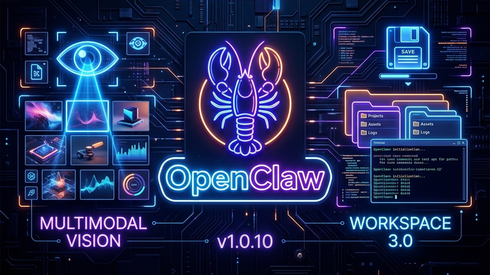
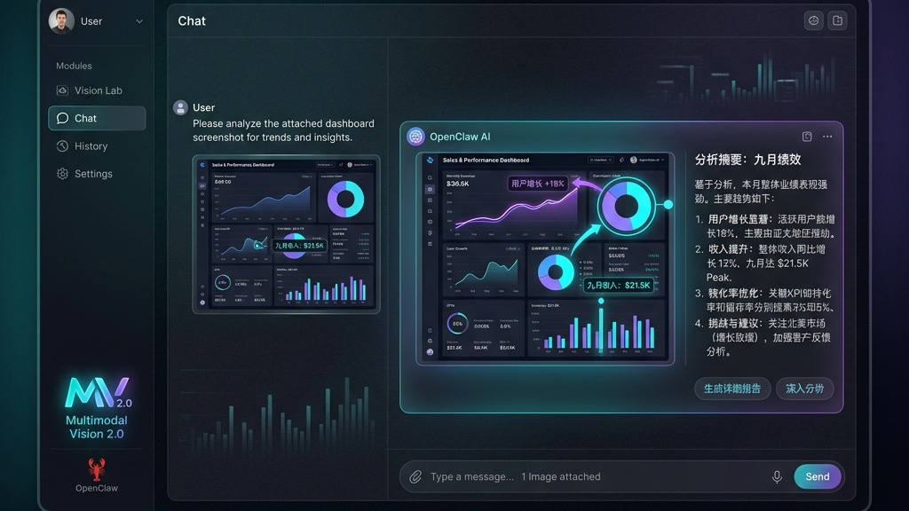
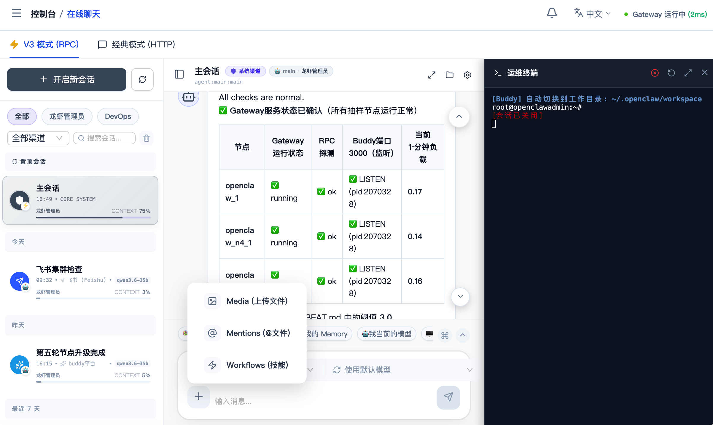
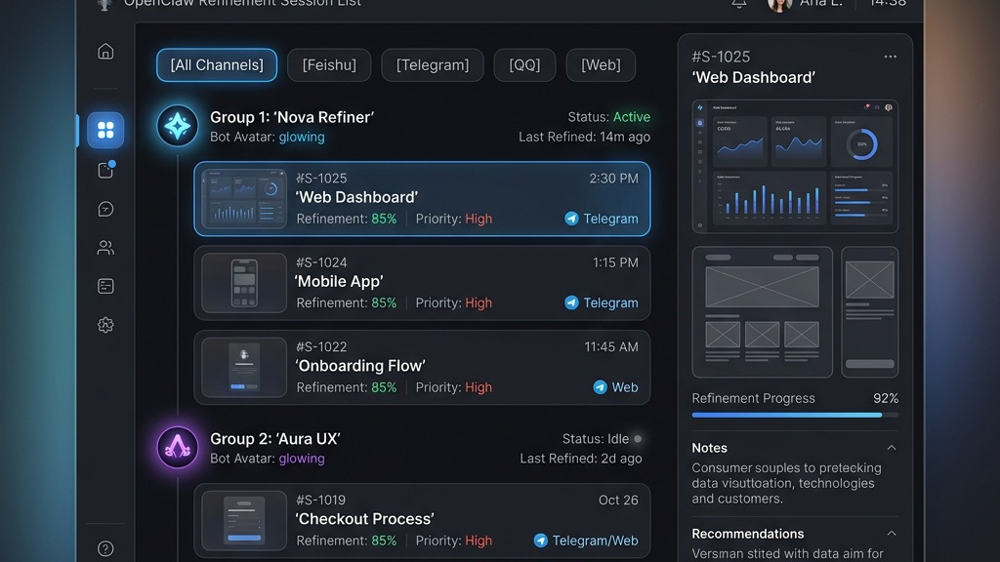

“我曾经听人说过，当一个工具不再只是工具，它就成了一种记忆。”
“1.0.9 的时候，我们还在讨论视界的边界；到了 1.0.10，我发现边界其实并不存在，存在的只有‘沉浸’。”
“当你敲下一个 @，就像是在人群中精准地唤醒一个老友的名字，那一刻，对话不再是对话，它成了工作，成了生活。有人说，最远的距离是对话与代码的距离。但在 1.0.10 的工坊里，距离缩短到了一个 CLI 窗口，一个保存按钮。我们不再只是在‘看见’，我们是在‘共生’。”
“五月一日，在这个被定义的时刻，感官觉醒，协同不再孤独。”
🔖 当前版本: v1.0.10
📅 发布日期: 2026-05-01
🆔 基准代码: 8484b46f
🆔 当前提交: aac3775b
💠 核心主题: 对话即工作、智能上下文 (@Mention)、命令行集成 (CLI)、极致性能调优。

💡 大白话：截图直接往聊天框一贴就能问，它看得更清楚了，而且一定会用中文回你。想看文件夹里的文档或图片，直接点一下就能预览。

💡 大白话：现在你可以在聊天里用 @ 像点名一样引用文件夹或技能，机器人就像你的同事一样懂你的项目。AI 写出的好东西点一下就能存进它的“脑子里”，还能直接弹窗跑命令行，效率直接拉满。

💡 大白话：手机上用起来更宽敞了，找对话可以按机器人分类。如果你觉得哪里不好用，点一下旁边的信封图标就能给我们发邮件。
1. 性能“脱胎换骨” ⚡
2. 协议与容错 🛡️
3. 细节修复清单 🔧
| HASH | DESCRIPTION |
|---|---|
| aac3775 | docs: 添加 PR 描述规范模板 |
| 63d397f | feat: 在侧边栏和概览页添加反馈邮箱图标 |
| f947a40 | perf(v3): 优化右侧面板拖动手感 |
| b911ef9 | fix(v3): 修复文件夹浏览器导致的样式污染 |
| 4a00bb0 | feat(chatV3): 完善运维终端 Modal 与设置项集成 |
| 6390598 | feat(chatV3): 优化工作区布局与侧边栏交互 |
| 3c4b9c2 | fix: 修复文件浏览器图标未对齐问题 |
| 8d7c19b | feat: 增强 AI Chat 多模态能力及文件管理体验 |
| f38b8c2 | feat(chat): 优化会话列表多 Bot 及渠道过滤 |
| f82642a | fix(ui): 修复 skills 预览 markdown 缺失滚动条 |
| f284a0f | feat(FileExplorer): 新增悬浮保存按钮及国际化 |
| c614521 | style: Web 端完整显示会话 ID |
| 9705615 | feat: 优化 Chat V3 全屏指示器及复制兼容性 |
| e7c6518 | fix: 增强复制路径功能兼容性 |
| f12caef | fix: 完善图片能力拦截逻辑 |
| 27ddc48 | feat: 优化指令强制使用中文回复 |
| 45679c6 | perf: 进一步优化图片查看性能 |
| 3be68f1 | perf: 深度优化聊天上传性能 504 修复 |
| e64d526 | feat: 增强多模态能力可视化与交互 |
| bb0c67d | fix(chat): 修复 AI 思考计时器重置 Bug |
| 20373e8 | ui: 优化 Dashboard 初始状态显示 |
| f1cd668 | feat: 优化消息引用及数据清洗 |
| 3861cc4 | revert(v3): 还原消息渲染逻辑 |
| 2a028f5 | feat(chat): 优化思考反馈及图片粘贴支持 |
| a422788 | fix(v3): 修复会话总结 404 及反馈逻辑 |
| 124106c | fix(web): 生成标题接口 404 回退 |
| 938968a | fix(chatV3): 首次进入自动对齐 Bot |
| e10047c | feat(chatV3): 分析过程默认展开支持复制 |
| 2e19d73 | feat: 文件创建支持初始内容优化 |
| 7f15c5d | feat: 文件浏览器增加侧边栏收缩功能 |
| c554325 | fix: 修复文件浏览器右键菜单偏移 |
| 12144f6 | feat: 增加 Bot 工作区文件浏览器 |
| 1195981 | feat: 优化文件预览及新建功能 |
| 024fa11 | fix(chatV3): 补全未命名会话标题 |
| 38b8a5b | feat(chat-v3): 优化消息来源识别 |
| 85c1b86 | fix(file-explorer): 修复图片无法预览问题 |
| d05eef9 | feat(chatV3): 增强会话名称保护及分析工具 |
| 63477ce | feat(chart): 增强 ECharts 渲染容错性 |
| e79188f | fix(timeout): 大幅增加指令超时时间 |
| 5b71ce6 | feat(ui): 优化移动端文件浏览器布局 |
| 7b3c4db | feat: 调整异步任务及代理超时时间 |
| 89fa844 | style: 优化文件浏览器移动端导航 |
| fb5aea7 | feat(chat): 优化 v3 聊天 ECharts 流式渲染 |
| c331ebe | feat: 支持 :::analysis 自定义分析标签 |